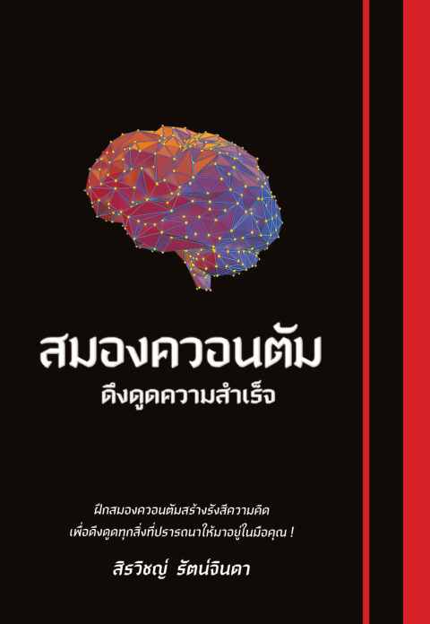

เปิด PDF ต้นฉบับเล่ม ๒ · คู่มือเดินทางแบบโต้ตอบ
สมองควอนตัมดึงดูดความสำเร็จ
เล่มนี้ชวนมองสมองผ่านแว่นฟิสิกส์ควอนตัม ตั้งแต่กระแสไฟฟ้าและคลื่นความถี่ ไปจนถึงจิตที่เกิดดับต่อเนื่องเป็นสาย แล้วนำไปสู่แนวทางฝึกฝนบุคลิกภาพ ความคิด และการสื่อสารเพื่อสร้างโอกาสความสำเร็จในชีวิต โดยปิดท้ายด้วยบุญซึ่งหนังสือวางเป็นตัวเสริมพลัง และความพอเพียงซึ่งเป็นตัวเบรกความโลภ
แนวคิดหลักสามข้อของเล่มนี้
จิตเกิด-ดับ
หนังสือเสนอว่าจิตที่ผุดขึ้นและดับไปต่อเนื่องเป็นสาย คือกระบวนการทางควอนตัมในสมอง ซึ่งยังเป็นสมมติฐาน
รังสีความคิด
หนังสือเสนอว่าการฝึกส่งพลังความคิดและปรับบุคลิกภาพสร้างแรงดึงดูดที่ส่งผลต่อคนรอบข้างและโอกาสในชีวิต ข้อที่ว่าความคิดส่งผลถึงคนอื่นได้โดยตรงยังไม่มีหลักฐาน
ธรรมค้ำจุน
บทท้ายเล่มพูดถึงบุญ สติ และความพอเพียง หนังสือวางบุญเป็นตัวเสริมพลังดึงดูดความสำเร็จ และวางความพอเพียงเป็นตัวเบรกความโลภ คู่มือชวนอ่านทั้งสองอย่างระวัง
เส้นทาง 17 บท · อ่านตามลำดับหรือข้ามไปบทที่สนใจก็ได้
๑ทำความรู้จักควอนตัมและสนามควอนตัมอนุภาคและสนามที่มองไม่เห็น ฐานของสสารทุกอย่างรอบตัวอ่านได้
๒ประจุ กระแส และคลื่นความถี่ควอนตัมในสมองจากอะตอมในเซลล์ประสาท ถึงคลื่นที่แผ่ออกจากความคิดอ่านได้
๓จิตเกิด-ดับ ผลผลิตทางควอนตัม และสมองดิจิทัลจิตที่เกิดดับเร็วจนมองไม่ทัน อาจเป็นกลไกควอนตัมเดียวกับที่ทำให้สมองประมวลผลแบบคิวบิตอ่านได้
๔สถานะควอนตัม ความพัวพันทางจิต และการพิชิตความสำเร็จอิเล็กตรอนที่เป็นทั้งคลื่นและอนุภาค กับข้อเสนอของหนังสือว่าจิตสองคนเชื่อมกันได้ไม่ขึ้นกับระยะทางอ่านได้
๕รังสีส่วนตัวและรังสีกายจากกระแสประสาททั่วร่างกาย ถึงการทดสอบด้วยมือที่หนังสือเสนอ และสิ่งที่มือรู้สึกได้จริงอ่านได้
๖ฝึกเสริมสร้างรังสีกาย และรังสีความคิดยืดแล้วหด หายใจให้ลึก ก่อนดูข้อเสนอของหนังสือว่าทัศนคติที่ถือไว้แผ่เป็นรังสีความคิดได้เอง และสิ่งที่คนรอบตัวรับรู้ได้จริงอ่านได้
๗รังสีความคิดเพื่อการโน้มน้าวใจและการฝึกส่งจากแผ่ออกมาเฉยๆ สู่การตั้งใจส่งกระแสจิต ฝึกหน้ากระจกจนถึงฝึกกับคนจริงอ่านได้
๘การออกคำสั่งขั้นสูงและการปะทะของรังสีส่วนตัวจากคำสั่งหน้ากระจกสู่สนามอาชีพ แล้วดูว่าหนังสือสอนให้ตั้งรับและโจมตีอย่างไรเมื่อ 'รังสี' สองฝ่ายปะทะกันอ่านได้
๙แรงดึงดูดทางความคิดกับความสำเร็จหารูปปึกธนบัตรมาจ้องมอง สั่งไม่ใช่แค่บอก แล้วดูว่าหนังสืออ่านการนึกภาพก่อนตีของไทเกอร์ วูดส์ อย่างไรอ่านได้
๑๐แรงดึงดูดทางความคิดกับชีวิต ไวรัส และสนามควอนตัมจากคำพูดตอนขับรถ ถึงเกราะป้องกันไวรัส แล้วดูว่าข้ออ้างว่ารังสีความคิดคือสนามแม่เหล็กไฟฟ้าขัดกับตัวเองตรงไหนอ่านได้
๑๑จิตรู้สำนึกกับจิตใต้สำนึกจิตรู้สำนึกกับจิตใต้สำนึกไม่ใช่จิตสองดวง แต่เป็นจิตเดียวที่ทำงานคนละโหมด และอาจเก็บความทรงจำได้ลึกกว่าที่คุณคิดอ่านได้
๑๒กลไกการทำงานของสมอง อะมิกดาลา และฮิปโปแคมปัสสมองสามชั้นที่แบ่งงานกันทำ อะมิกดาลาที่ผูกความทรงจำไว้กับอารมณ์และความกลัว และฮิปโปแคมปัสที่ตัดสินว่าอะไรควรเก็บไว้ถาวรอ่านได้
๑๓เพิ่มเซลล์ประสาท ปรับบุคลิกภาพ พัฒนา IQ และ EQเซลล์ประสาทสมองที่เกิดใหม่ได้ทุกวัน บุคลิกภาพที่ฝึกได้ และสองความฉลาดที่ต้องมาคู่กันอ่านได้
๑๔พลังแห่งความคิดสร้างสรรค์และการอ่านภาษากายจากไอเดียที่แวบขึ้นเอง ถึงท่าทางที่บอกความจริงโดยไม่ต้องพูดอ่านได้
๑๕เคล็ดลับสร้างความสัมพันธ์และโน้มน้าวใจนิสัยต่าง วิธีโน้มน้าวก็ต่าง — ปรับน้ำเสียงและวิธีพูดให้ตรงกับคนตรงหน้าอ่านได้
๑๖หลักธรรมสู่ความสำเร็จ และสมาธิเปลี่ยนสมองอิทธิบาท 4 ขันติ สัจจะ และสัปปุริสธรรม หลักธรรมที่ใช้ได้จริงในชีวิตประจำวัน ก่อนพาไปดูว่างานวิจัยพบอะไรเรื่องสมาธิกับเนื้อสมองอ่านได้
๑๗บุญ ความรู้ในพุทธศาสนา และความสำเร็จอย่างพอเพียงบุญที่หนังสือเสนอว่าทำงานผ่านกลไกเดียวกับรังสีความคิด ความรู้ที่หนังสือเรียกว่าอภิญญา และบทปิดเล่มว่าทำไมความสำเร็จต้องพอเพียงอ่านได้
วิธีใช้คู่มือนี้
คำที่มีเส้นประสีทองข้างใต้ กดได้ทันที จะมีคำอธิบายภาษาคนธรรมดาขึ้นมาโดยไม่ต้องรอ · แต่ละบทมี "หน้าต่างสู่จักรวาล" สีน้ำเงินเข้มที่เลื่อนเล่นได้ เพราะเรื่องพวกนี้ต้องเห็นมันเคลื่อนไหวถึงจะเข้าใจ · สงสัยตรงไหน กดปุ่ม "ถามตรงนี้" มุมขวาล่าง ผู้ช่วยรู้เนื้อหาทั้งเล่มและจะบอกว่าเรื่องนั้นอยู่บทไหน
คำที่มีเส้นประสีทองข้างใต้ กดได้ทันที จะมีคำอธิบายภาษาคนธรรมดาขึ้นมาโดยไม่ต้องรอ · แต่ละบทมี "หน้าต่างสู่จักรวาล" สีน้ำเงินเข้มที่เลื่อนเล่นได้ เพราะเรื่องพวกนี้ต้องเห็นมันเคลื่อนไหวถึงจะเข้าใจ · สงสัยตรงไหน กดปุ่ม "ถามตรงนี้" มุมขวาล่าง ผู้ช่วยรู้เนื้อหาทั้งเล่มและจะบอกว่าเรื่องนั้นอยู่บทไหน